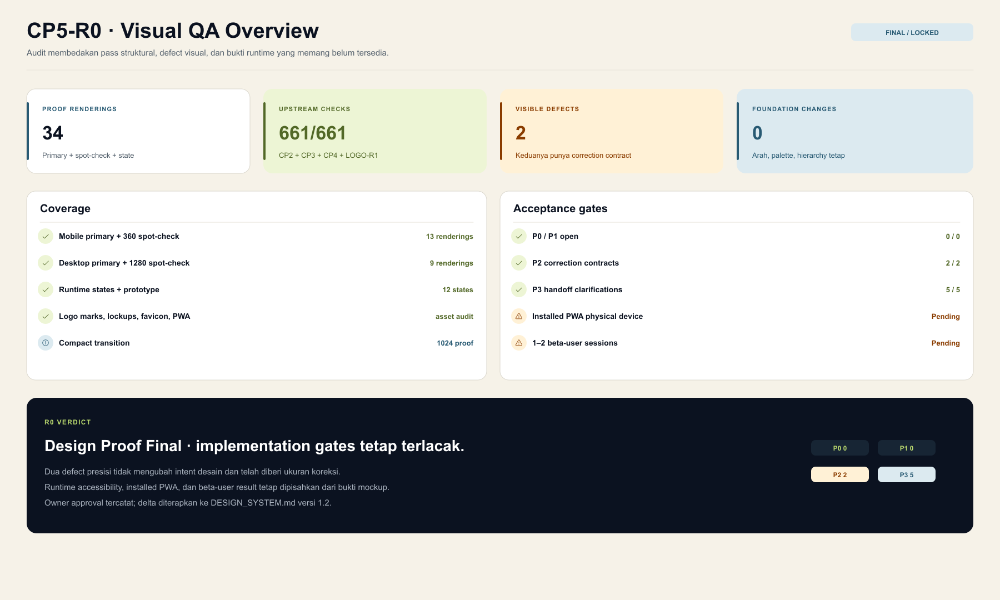
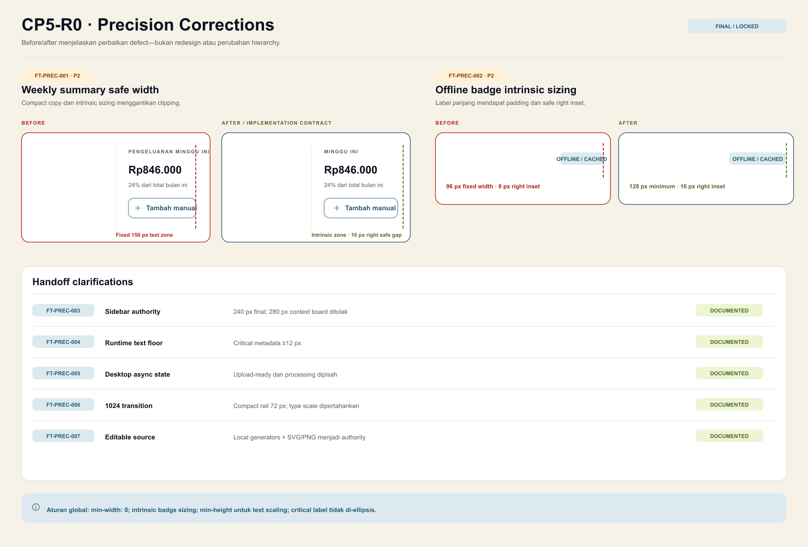
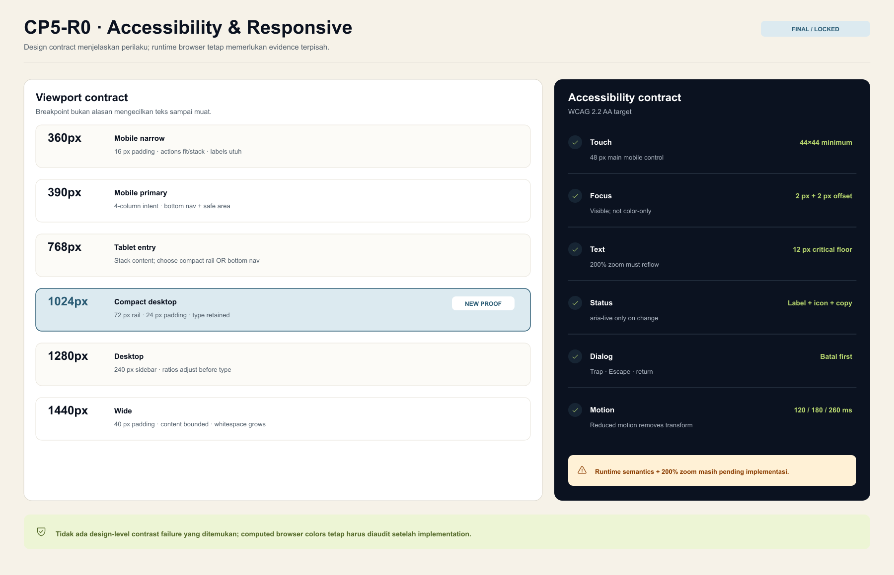
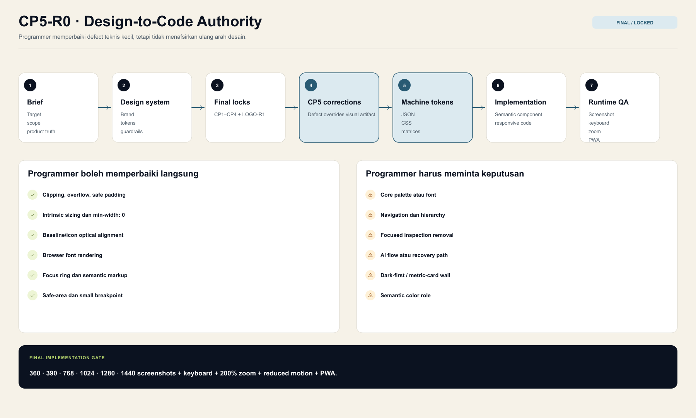
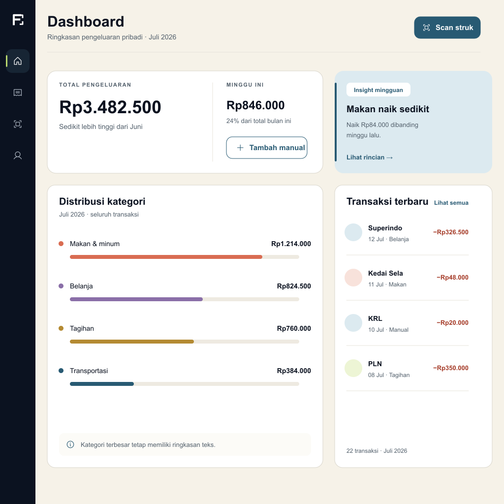

QA overview

Precision corrections

Accessibility & responsive

Handoff map

1024 px transition proof

FINTRACK AI · DESIGN PROOF
Precision audit, responsive contract, dan implementation bridge.




